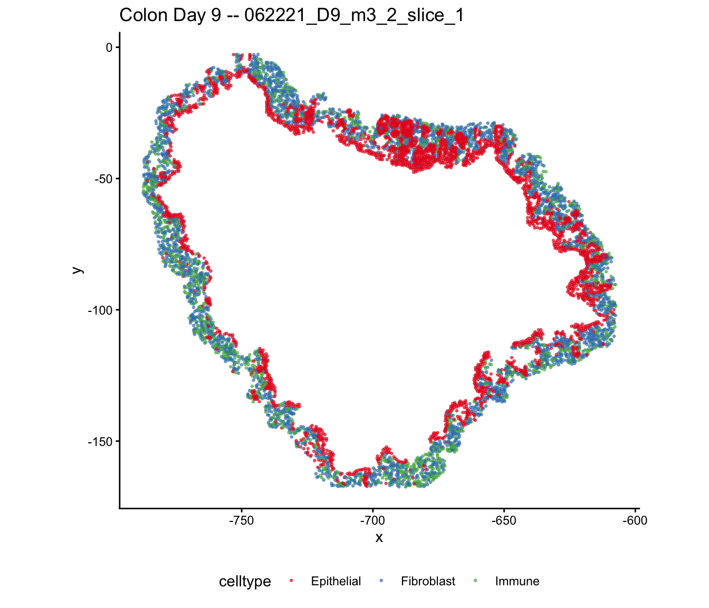
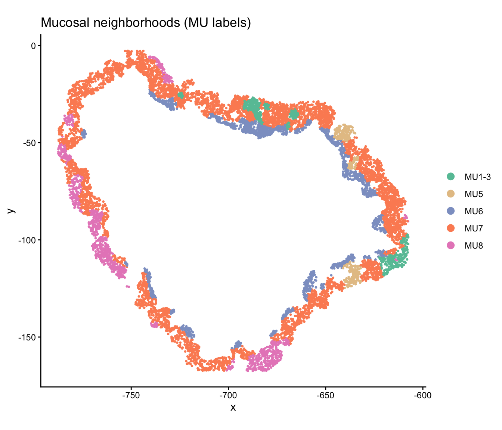
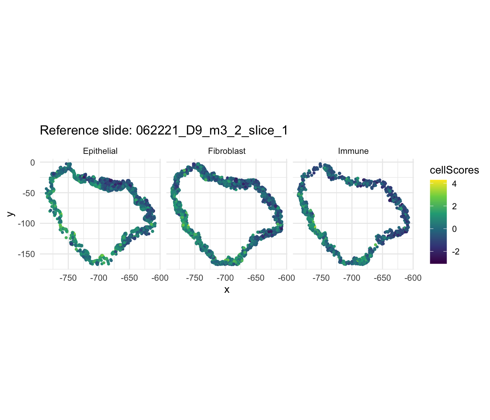
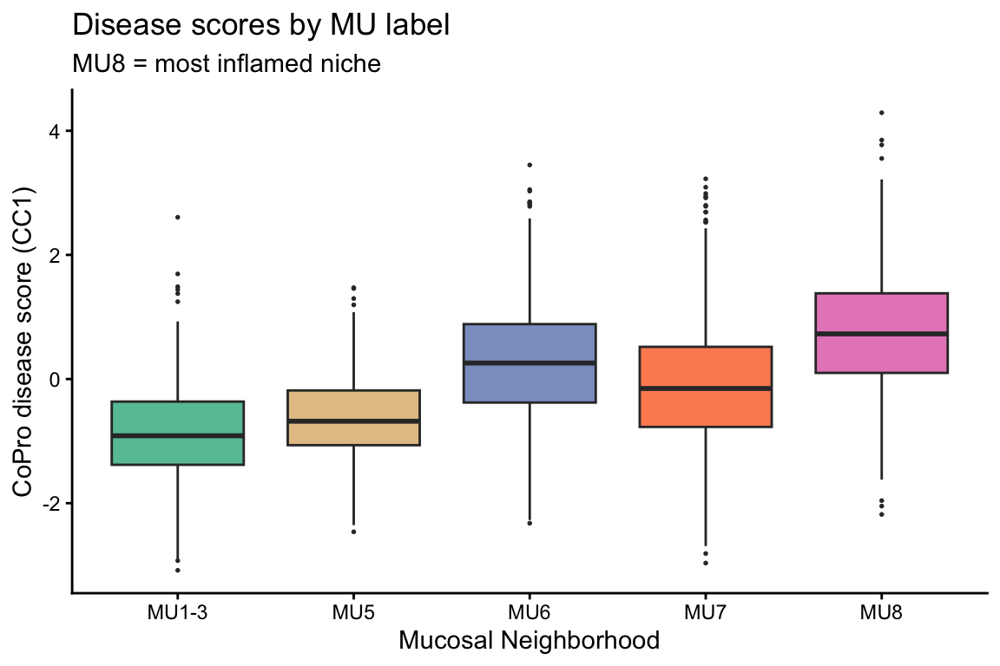
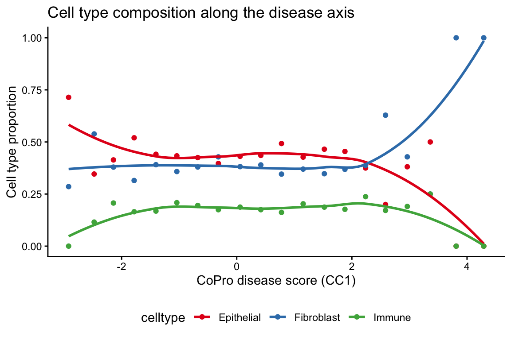
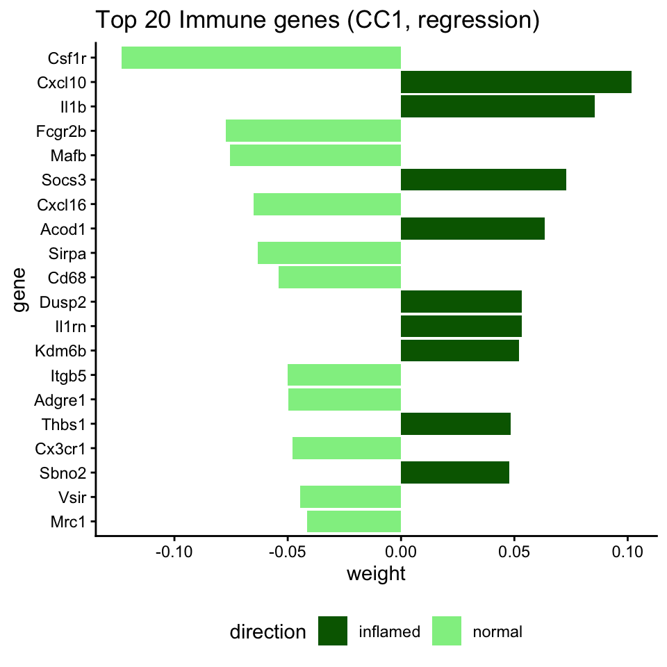
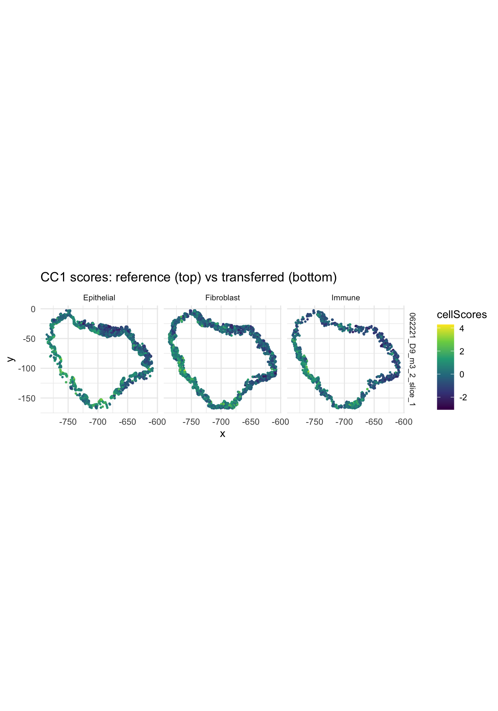
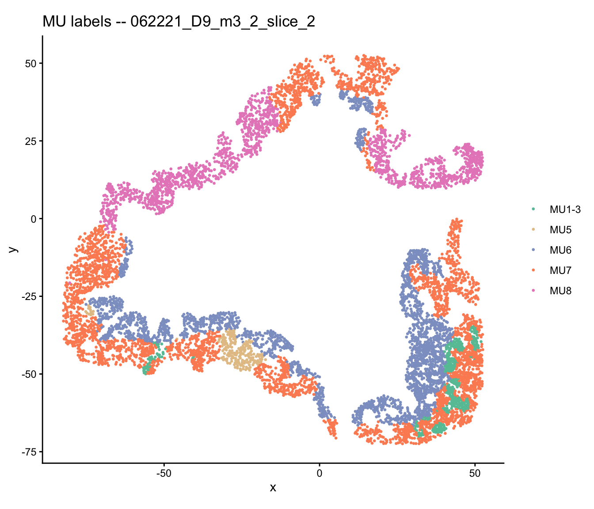

Multi-slide analysis and score transfer (Colon Day 9)
2026-05-10
Source:vignettes/colon_d9_multi_slide.Rmd
colon_d9_multi_slide.RmdOverview
This vignette demonstrates CoPro’s multi-slide analysis and score transfer capabilities using colon organoid Day 9 data. At Day 9, the tissue exhibits severe inflammation with heterogeneous disease progression across different regions. CoPro detects a disease progression axis that correlates with independently derived mucosal neighborhood (MU) labels—in particular, MU8 marks the most severely inflamed niche.
When multiple tissue slides are available, CoPro can:
- Learn co-progression patterns from a reference slide
- Transfer the learned gene weights to new slides
- Compare co-progression patterns across biological replicates
Download and load data
data_path <- copro_download_data("colon_d9")
dat <- readRDS(data_path)
# Three slides are included
cat("Slides:", paste(dat$selectedSlides, collapse = ", "), "\n")## Slides: 062221_D9_m3_2_slice_1, 062221_D9_m3_2_slice_2, 062221_D9_m3_2_slice_3## Total cells: 21436
table(dat$slideID)##
## 062221_D9_m3_2_slice_1 062221_D9_m3_2_slice_2 062221_D9_m3_2_slice_3
## 7242 6627 7567Visualize the tissue
Cell types
plot_df <- data.frame(
x = dat$locationData$x,
y = dat$locationData$y,
celltype = dat$cellTypes,
slide = dat$slideID
)
ggplot(plot_df[plot_df$slide == dat$selectedSlides[1], ],
aes(x = x, y = y, color = celltype)) +
geom_point(size = 0.5, alpha = 0.6) +
scale_color_manual(values = c("Epithelial" = "#E41A1C",
"Fibroblast" = "#377EB8",
"Immune" = "#4DAF4A")) +
coord_fixed() +
ggtitle(paste("Colon Day 9 --", dat$selectedSlides[1])) +
theme_classic() +
theme(legend.position = "bottom")
Mucosal neighborhood (MU) labels
The tissue has been independently annotated with mucosal neighborhood labels via Leiden clustering. MU8 marks the most severely inflamed niche, while MU1–3 are grouped as relatively normal crypt neighborhoods:
mu_df <- data.frame(
x = dat$locationData$x,
y = dat$locationData$y,
MU = dat$metaData$Leiden_neigh,
slide = dat$slideID
)
# Group MU labels as in the manuscript
mu_df$MU_grouped <- as.character(mu_df$MU)
mu_df$MU_grouped[mu_df$MU %in% c("MU1", "MU11")] <- "MU1-3"
mu_df <- mu_df[mu_df$MU_grouped %in% c("MU1-3", "MU5", "MU6", "MU7", "MU8"), ]
mu_df$MU_grouped <- factor(mu_df$MU_grouped,
levels = c("MU1-3", "MU5", "MU6", "MU7", "MU8"))
mu_colors <- c("MU1-3" = "#66C2A5", "MU5" = "#E5C494",
"MU6" = "#8DA0CB", "MU7" = "#FC8D62", "MU8" = "#E78AC3")
ggplot(mu_df[mu_df$slide == dat$selectedSlides[1], ],
aes(x = x, y = y, color = MU_grouped)) +
geom_point(size = 0.5) +
scale_color_manual(values = mu_colors) +
coord_fixed() +
ggtitle("Mucosal neighborhoods (MU labels)") +
theme_classic() +
theme(legend.title = element_blank(), legend.position = "right") +
guides(color = guide_legend(override.aes = list(size = 3)))
Strategy: Reference + target slides
We use the first slide as the reference to learn co-progression patterns, then transfer scores to the other two slides.
ref_slide <- dat$selectedSlides[1]
tar_slides <- dat$selectedSlides[2:3]
# Indices for reference and target
ref_idx <- dat$slideID == ref_slide
tar1_idx <- dat$slideID == tar_slides[1]
tar2_idx <- dat$slideID == tar_slides[2]Step 1: Run CoPro on the reference slide
cell_types <- c("Epithelial", "Fibroblast", "Immune")
# Create reference CoPro object
ref_obj <- newCoProSingle(
normalizedData = dat$normalizedData[ref_idx, ],
locationData = dat$locationData[ref_idx, ],
metaData = dat$metaData[ref_idx, ],
cellTypes = dat$cellTypes[ref_idx]
)
ref_obj <- subsetData(ref_obj, cellTypesOfInterest = cell_types)
# Run pipeline
ref_obj <- computePCA(ref_obj, nPCA = 40, center = TRUE, scale. = TRUE)
ref_obj <- computeDistance(ref_obj, distType = "Euclidean2D")
sigma_choice <- c(0.005, 0.01, 0.02, 0.05, 0.1)
ref_obj <- computeKernelMatrix(ref_obj, sigmaValues = sigma_choice)
ref_obj <- runSkrCCA(ref_obj, scalePCs = TRUE, maxIter = 500, nCC = 2)
ref_obj <- computeNormalizedCorrelation(ref_obj)
ref_obj <- computeGeneAndCellScores(ref_obj)
ref_obj <- computeRegressionGeneScores(ref_obj)Reference slide results
sigma_opt <- 0.01 # adjust based on normalized correlation
cs_ref <- getCellScoresInSitu(ref_obj, sigmaValueChoice = sigma_opt)
ggplot(cs_ref) +
geom_point(aes(x = x, y = y, color = cellScores), size = 0.8) +
scale_color_viridis_c() +
facet_wrap(~ cellTypesSub) +
coord_fixed() +
ggtitle(paste("Reference slide:", ref_slide)) +
theme_minimal()
Disease axis vs MU labels
The CoPro disease axis should correlate with MU labels, with MU8 cells showing the highest scores:
ref_meta <- ref_obj@metaDataSub
ref_meta$cell_score <- ref_meta[, paste0("cellScore_sigma_", sigma_opt,
"_cc_index_1")]
# Assign grouped MU labels
ref_meta$MU_grouped <- as.character(ref_meta$Leiden_neigh)
ref_meta$MU_grouped[ref_meta$MU_grouped %in% c("MU1", "MU11")] <- "MU1-3"
ref_meta <- ref_meta[ref_meta$MU_grouped %in%
c("MU1-3", "MU5", "MU6", "MU7", "MU8"), ]
ref_meta$MU_grouped <- factor(ref_meta$MU_grouped,
levels = c("MU1-3", "MU5", "MU6", "MU7", "MU8"))
ggplot(ref_meta, aes(x = MU_grouped, y = cell_score, fill = MU_grouped)) +
geom_boxplot(outlier.size = 0.3) +
scale_fill_manual(values = mu_colors, guide = "none") +
labs(x = "Mucosal Neighborhood", y = "CoPro disease score (CC1)",
title = "Disease scores by MU label",
subtitle = "MU8 = most inflamed niche") +
theme_classic()
Cell type proportions along the disease axis
As disease severity increases, the cell type composition shifts—immune cell proportion increases while epithelial proportion decreases.
Note: The results below are based on a single slide and may not fully reflect the patterns reported in the manuscript, which analyzed all Day 9 slides jointly. For a more comprehensive analysis, please refer to the manuscript. The full dataset is available at https://doi.org/10.5061/dryad.rjdfn2zh3.
ref_meta_all <- ref_obj@metaDataSub
ref_meta_all$cell_score <- ref_meta_all[, paste0("cellScore_sigma_",
sigma_opt, "_cc_index_1")]
# Bin cells by disease score
ref_meta_all$score_bin <- cut(ref_meta_all$cell_score, breaks = 20)
# Calculate proportions
prop_df <- do.call(rbind, lapply(split(ref_meta_all, ref_meta_all$score_bin),
function(x) {
data.frame(
score_mid = mean(x$cell_score, na.rm = TRUE),
Epithelial = mean(x$Tier1 == "Epithelial"),
Fibroblast = mean(x$Tier1 == "Fibroblast"),
Immune = mean(x$Tier1 == "Immune")
)
}
))
prop_long <- reshape(prop_df, direction = "long",
varying = c("Epithelial", "Fibroblast", "Immune"),
v.names = "proportion", timevar = "celltype",
times = c("Epithelial", "Fibroblast", "Immune"))
ggplot(prop_long, aes(x = score_mid, y = proportion, color = celltype)) +
geom_point() +
geom_smooth(method = "loess", se = FALSE) +
scale_color_manual(values = c("Epithelial" = "#E41A1C",
"Fibroblast" = "#377EB8",
"Immune" = "#4DAF4A")) +
labs(x = "CoPro disease score (CC1)", y = "Cell type proportion",
title = "Cell type composition along the disease axis") +
theme_classic() +
theme(legend.position = "bottom")## `geom_smooth()` using formula = 'y ~ x'
Top genes associated with the disease axis
# Immune genes on the disease axis
key_imm <- paste0("geneScores|sigma", sigma_opt, "|Immune")
gs_imm <- ref_obj@geneScoresRegression[[key_imm]]
gs_imm_cc1 <- gs_imm[, 1]
top_imm <- head(sort(abs(gs_imm_cc1), decreasing = TRUE), 20)
top_imm_df <- data.frame(
gene = factor(names(top_imm), levels = rev(names(top_imm))),
weight = gs_imm_cc1[names(top_imm)]
)
top_imm_df$direction <- ifelse(top_imm_df$weight > 0, "inflamed", "normal")
ggplot(top_imm_df, aes(x = gene, y = weight, fill = direction)) +
geom_col() +
coord_flip() +
scale_fill_manual(values = c("inflamed" = "darkgreen",
"normal" = "lightgreen")) +
ggtitle("Top 20 Immune genes (CC1, regression)") +
theme_classic() +
theme(legend.position = "bottom")
Step 2: Create target CoPro objects
# Target slide 1
tar1_obj <- newCoProSingle(
normalizedData = dat$normalizedData[tar1_idx, ],
locationData = dat$locationData[tar1_idx, ],
metaData = dat$metaData[tar1_idx, ],
cellTypes = dat$cellTypes[tar1_idx]
)
tar1_obj <- subsetData(tar1_obj, cellTypesOfInterest = cell_types)
tar1_obj <- computePCA(tar1_obj, nPCA = 40, center = TRUE, scale. = TRUE)
tar1_obj <- computeDistance(tar1_obj, distType = "Euclidean2D")
tar1_obj <- computeKernelMatrix(tar1_obj, sigmaValues = sigma_choice)
# Target slide 2
tar2_obj <- newCoProSingle(
normalizedData = dat$normalizedData[tar2_idx, ],
locationData = dat$locationData[tar2_idx, ],
metaData = dat$metaData[tar2_idx, ],
cellTypes = dat$cellTypes[tar2_idx]
)
tar2_obj <- subsetData(tar2_obj, cellTypesOfInterest = cell_types)
tar2_obj <- computePCA(tar2_obj, nPCA = 40, center = TRUE, scale. = TRUE)
tar2_obj <- computeDistance(tar2_obj, distType = "Euclidean2D")
tar2_obj <- computeKernelMatrix(tar2_obj, sigmaValues = sigma_choice)Step 3: Transfer scores
Transfer the learned gene weights from the reference to each target slide:
# Transfer to target 1
tar1_scores <- getTransferCellScores(
ref_obj = ref_obj,
tar_obj = tar1_obj,
sigma_choice = sigma_opt,
gene_score_type = "regression"
)## Using regression-based gene weights for transfer
## transferring gene scores for cell type Epithelial## retaining 940 genes for CC_1 with threshold 0
## retaining 940 genes for CC_2 with threshold 0
## transferring gene scores for cell type Fibroblast## retaining 940 genes for CC_1 with threshold 0
## retaining 940 genes for CC_2 with threshold 0
## transferring gene scores for cell type Immune## retaining 940 genes for CC_1 with threshold 0
## retaining 940 genes for CC_2 with threshold 0
# Transfer to target 2
tar2_scores <- getTransferCellScores(
ref_obj = ref_obj,
tar_obj = tar2_obj,
sigma_choice = sigma_opt,
gene_score_type = "regression"
)## Using regression-based gene weights for transfer
## transferring gene scores for cell type Epithelial## retaining 940 genes for CC_1 with threshold 0
## retaining 940 genes for CC_2 with threshold 0
## transferring gene scores for cell type Fibroblast## retaining 940 genes for CC_1 with threshold 0
## retaining 940 genes for CC_2 with threshold 0
## transferring gene scores for cell type Immune## retaining 940 genes for CC_1 with threshold 0
## retaining 940 genes for CC_2 with threshold 0Step 4: Visualize transferred scores
# Build data frames for target slides from transferred scores
build_transfer_df <- function(tar_dat, tar_scores, slide_name, sigma) {
rows <- list()
for (ct in cell_types) {
ct_key <- paste0("geneScores|sigma", sigma, "|", ct)
if (ct_key %in% names(tar_scores)) {
ct_idx <- tar_dat$cellTypes == ct
rows[[ct]] <- data.frame(
x = tar_dat$locationData$x[ct_idx],
y = tar_dat$locationData$y[ct_idx],
cellScores = tar_scores[[ct_key]][, 1],
cellTypesSub = ct,
slide = slide_name
)
}
}
do.call(rbind, rows)
}
# Build target data using the original dat split by slide indices
tar1_dat <- list(
locationData = dat$locationData[tar1_idx, ],
cellTypes = dat$cellTypes[tar1_idx]
)
tar2_dat <- list(
locationData = dat$locationData[tar2_idx, ],
cellTypes = dat$cellTypes[tar2_idx]
)
tar1_cs <- build_transfer_df(tar1_dat, tar1_scores, tar_slides[1], sigma_opt)
tar2_cs <- build_transfer_df(tar2_dat, tar2_scores, tar_slides[2], sigma_opt)
# Add slide label to reference
cs_ref$slide <- ref_slide
all_cs <- rbind(
cs_ref[, c("x", "y", "cellScores", "cellTypesSub", "slide")],
tar1_cs,
tar2_cs
)
ggplot(all_cs) +
geom_point(aes(x = x, y = y, color = cellScores), size = 0.5) +
scale_color_viridis_c() +
facet_grid(slide ~ cellTypesSub) +
coord_fixed() +
ggtitle("CC1 scores: reference (top) vs transferred (bottom)") +
theme_minimal() +
theme(strip.text = element_text(size = 8))
Step 5: Transferred scores vs MU labels on target slides
Check whether the transferred disease scores also separate MU labels. Here we show the reference slide MU boxplot (already computed above) alongside the MU labels in spatial context for a target slide:
# Show MU labels spatially on target slide 1
tar1_mu <- data.frame(
x = dat$locationData$x[tar1_idx],
y = dat$locationData$y[tar1_idx],
MU = dat$metaData$Leiden_neigh[tar1_idx]
)
tar1_mu$MU_grouped <- as.character(tar1_mu$MU)
tar1_mu$MU_grouped[tar1_mu$MU_grouped %in% c("MU1", "MU11")] <- "MU1-3"
tar1_mu <- tar1_mu[tar1_mu$MU_grouped %in%
c("MU1-3", "MU5", "MU6", "MU7", "MU8"), ]
tar1_mu$MU_grouped <- factor(tar1_mu$MU_grouped,
levels = c("MU1-3", "MU5", "MU6", "MU7", "MU8"))
ggplot(tar1_mu, aes(x = x, y = y, color = MU_grouped)) +
geom_point(size = 0.5) +
scale_color_manual(values = mu_colors) +
coord_fixed() +
ggtitle(paste("MU labels --", tar_slides[1])) +
theme_classic() +
theme(legend.title = element_blank())
Step 6: Assess transfer consistency
Compare the normalized correlation between the reference and transferred slides to assess whether the co-progression pattern is consistent. Here we focus on CC1, which corresponds to the disease progression axis.
tar1_ncorr <- getTransferNormCorr(
tar_obj = tar1_obj,
transfer_cell_scores = tar1_scores,
sigma_choice = sigma_opt
)
tar2_ncorr <- getTransferNormCorr(
tar_obj = tar2_obj,
transfer_cell_scores = tar2_scores,
sigma_choice = sigma_opt
)
cat("Reference norm. corr. (CC1):\n")## Reference norm. corr. (CC1):
ref_ncorr <- getNormCorr(ref_obj)
print(ref_ncorr[ref_ncorr$sigmaValues == sigma_opt &
ref_ncorr$CC_index == 1, ])## sigmaValues cellType1 cellType2 CC_index normalizedCorrelation
## sigma_0.01.1 0.01 Epithelial Fibroblast 1 0.1347929
## sigma_0.01.2 0.01 Epithelial Immune 1 0.1172354
## sigma_0.01.3 0.01 Fibroblast Immune 1 0.2806254
## ct12
## sigma_0.01.1 Epithelial-Fibroblast
## sigma_0.01.2 Epithelial-Immune
## sigma_0.01.3 Fibroblast-Immune
cat("\nTarget 1 transferred norm. corr. (CC1):\n")##
## Target 1 transferred norm. corr. (CC1):
tar1_ncorr_df <- tar1_ncorr[[1]]
print(tar1_ncorr_df[tar1_ncorr_df$CC_index == 1, ])## sigmaValue cellType1 cellType2 CC_index normalizedCorrelation
## 1 0.01 Epithelial Fibroblast 1 0.1111071
## 3 0.01 Epithelial Immune 1 0.1057365
## 5 0.01 Fibroblast Immune 1 0.2985131
cat("\nTarget 2 transferred norm. corr. (CC1):\n")##
## Target 2 transferred norm. corr. (CC1):
tar2_ncorr_df <- tar2_ncorr[[1]]
print(tar2_ncorr_df[tar2_ncorr_df$CC_index == 1, ])## sigmaValue cellType1 cellType2 CC_index normalizedCorrelation
## 1 0.01 Epithelial Fibroblast 1 0.06226141
## 3 0.01 Epithelial Immune 1 0.07693565
## 5 0.01 Fibroblast Immune 1 0.26801042High transferred normalized correlations indicate that the co-progression pattern learned from the reference generalizes well to independent slides.
Alternative: Multi-slide CoPro
For joint analysis across all slides simultaneously, use
newCoProMulti:
multi_obj <- newCoProMulti(
normalizedData = dat$normalizedData,
locationData = dat$locationData,
metaData = dat$metaData,
cellTypes = dat$cellTypes,
slideID = dat$slideID
)
multi_obj <- subsetData(multi_obj, cellTypesOfInterest = cell_types)
# The rest of the pipeline is identical
multi_obj <- computePCA(multi_obj, nPCA = 40, center = TRUE, scale. = TRUE)
multi_obj <- computeDistance(multi_obj, distType = "Euclidean2D")
multi_obj <- computeKernelMatrix(multi_obj, sigmaValues = sigma_choice)
multi_obj <- runSkrCCA(multi_obj, scalePCs = TRUE, maxIter = 500, nCC = 2)
multi_obj <- computeNormalizedCorrelation(multi_obj)
multi_obj <- computeGeneAndCellScores(multi_obj)The multi-slide approach optimizes CCA weights jointly across all slides, while the transfer approach trains on one slide and evaluates generalization. Both are useful depending on your analytical question.
Session info
## R version 4.5.2 (2025-10-31)
## Platform: aarch64-apple-darwin20
## Running under: macOS Tahoe 26.1
##
## Matrix products: default
## BLAS: /System/Library/Frameworks/Accelerate.framework/Versions/A/Frameworks/vecLib.framework/Versions/A/libBLAS.dylib
## LAPACK: /Library/Frameworks/R.framework/Versions/4.5-arm64/Resources/lib/libRlapack.dylib; LAPACK version 3.12.1
##
## locale:
## [1] en_US.UTF-8/en_US.UTF-8/en_US.UTF-8/C/en_US.UTF-8/en_US.UTF-8
##
## time zone: America/Los_Angeles
## tzcode source: internal
##
## attached base packages:
## [1] stats graphics grDevices utils datasets methods base
##
## other attached packages:
## [1] CoPro_1.1.0 magrittr_2.0.5 devtools_2.5.0 usethis_3.2.1 ggplot2_4.0.2
## [6] dplyr_1.2.1
##
## loaded via a namespace (and not attached):
## [1] generics_0.1.4 lattice_0.22-9 evaluate_1.0.5 grid_4.5.2
## [5] RColorBrewer_1.1-3 pkgload_1.5.1 fastmap_1.2.0 maps_3.4.3
## [9] Matrix_1.7-5 pkgbuild_1.4.8 sessioninfo_1.2.3 mgcv_1.9-4
## [13] purrr_1.2.1 spam_2.11-3 viridisLite_0.4.3 scales_1.4.0
## [17] cli_3.6.5 rlang_1.2.0 ellipsis_0.3.3 splines_4.5.2
## [21] withr_3.0.2 cachem_1.1.0 otel_0.2.0 tools_4.5.2
## [25] parallel_4.5.2 memoise_2.0.1 vctrs_0.7.2 R6_2.6.1
## [29] matrixStats_1.5.0 lifecycle_1.0.5 fs_2.0.1 irlba_2.3.7
## [33] pkgconfig_2.0.3 pillar_1.11.1 gtable_0.3.6 glue_1.8.0
## [37] Rcpp_1.1.1 fields_17.1 xfun_0.57 tibble_3.3.1
## [41] tidyselect_1.2.1 knitr_1.51 farver_2.1.2 nlme_3.1-169
## [45] labeling_0.4.3 dotCall64_1.2 compiler_4.5.2 S7_0.2.1